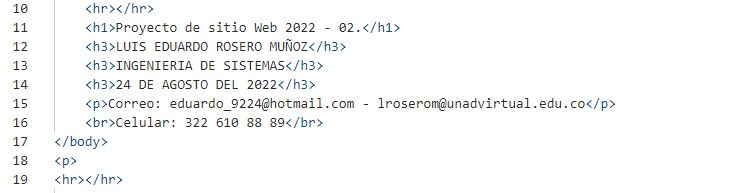

ETIQUETAS BÁSICAS DE HTML
En este lenguaje las etiquetas tienen esta forma:
< marca > contenido < / marca >
Esta es la etiqueta marca se puede notar que la etiqueta de inicio se diferencia del cierre por que la de cierre tiene un /. En este lenguaje hay muchas etiquetas que están emparejadas ejemplo:
< h 2 > titulo tipo 2 < / h 2 >
< p > titulo tipo 2 < / p >
Este lenguaje también admite etiquetas sin emparejar pero estas teminan en / ejemplo:
< h r / >
< Link … / >
Incluso hay etiquetas que no necesitan una etiqueta de cierre
< img>
< p> esta etiqueta es de párrafo no necesita cierre.
ETIQUETAS BÁSICAS
< body > para contenido.
< head > información sobre el documento.
< div > división dentro del contenido.
< a > para enlaces.
< strong > para poner el texto en negrita.
< br > para saltos de línea.
< H1 > a < H6 > títulos dentro del contenido.
< img > para añadir imágenes al documento.
